What this topic covers: reading, completing, correcting and drawing flowcharts, including sequence, selection, iteration and conversion to OCR-style pseudocode.
1) Figure 1 shows an algorithm that checks a number. State the output when the input number is 18 and when the input number is 21. (4 marks)
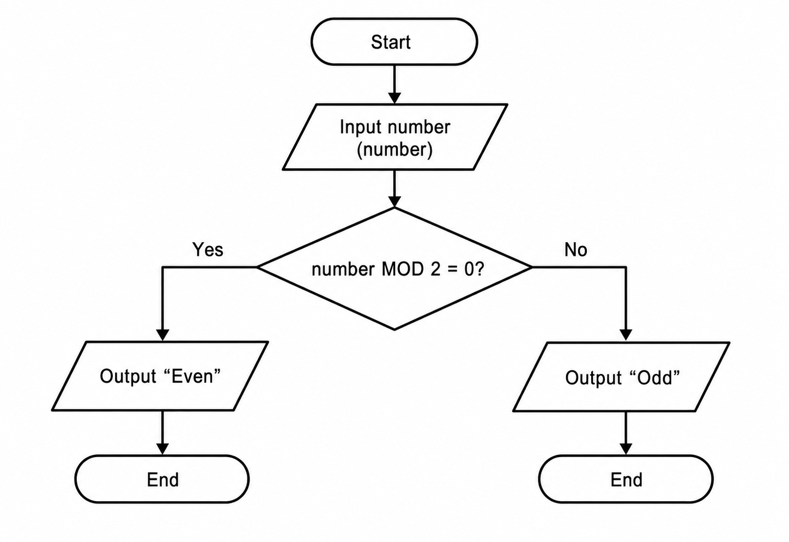
Figure 1: Flowchart for checking whether a number is even or odd
Mark scheme
Award up to 4 marks:
18 outputs Even.
18 MOD 2 = 0, so the Yes branch is followed.
21 outputs Odd.
21 MOD 2 is not 0, so the No branch is followed.
2) Figure 2 shows a pass or fail decision. Explain how the flowchart uses selection to choose the output. (4 marks)
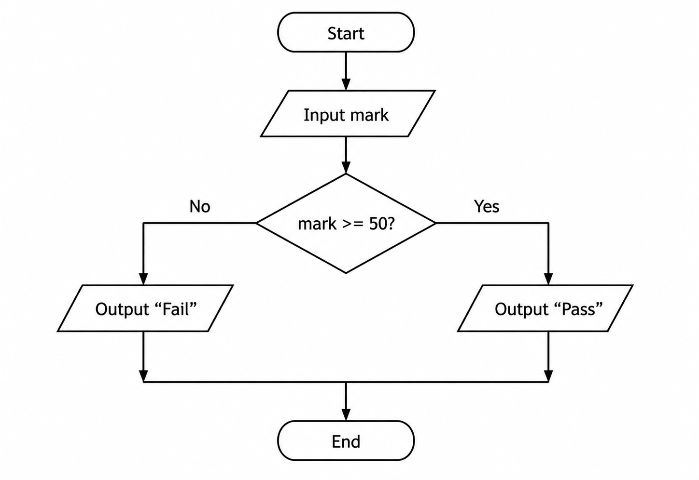
Figure 2: Flowchart for deciding whether a mark is a pass or fail
Mark scheme
1 mark for each correct point:
The mark is input using an input/output symbol.
The diamond decision checks whether mark >= 50.
The Yes branch outputs Pass.
The No branch outputs Fail.
Accept any other valid point.
3) Figure 3 shows a ticket decision. State the output for ages 8, 12 and 17. (3 marks)
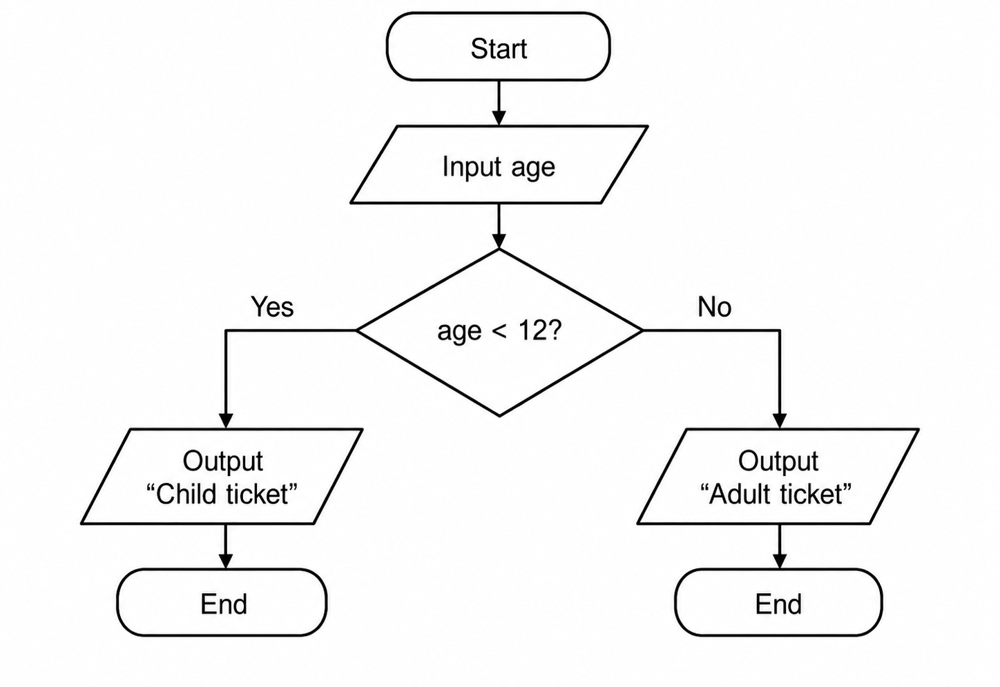
Figure 3: Flowchart for choosing a child or adult ticket
Mark scheme
1 mark for each correct output:
Age 8 outputs Child ticket.
Age 12 outputs Adult ticket because 12 is not less than 12.
Age 17 outputs Adult ticket.
4) Figure 4 compares two numbers. Describe what the flowchart does. (4 marks)
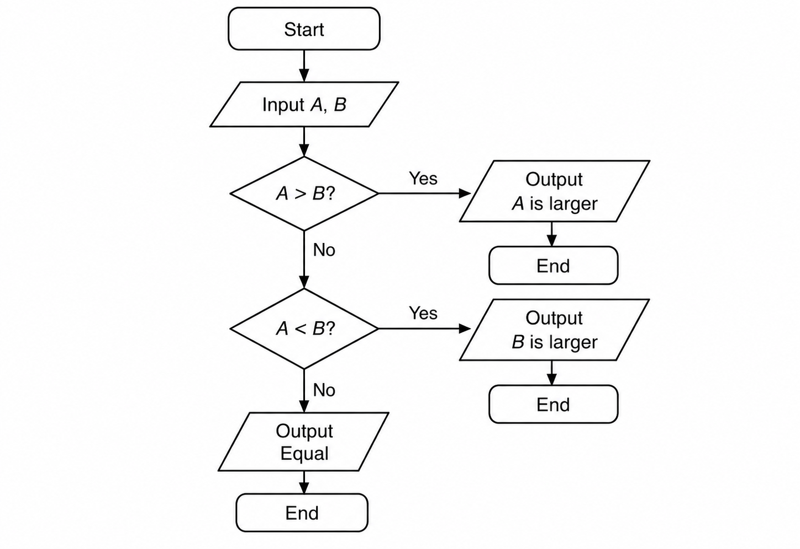
Figure 4: Flowchart for comparing two numbers
Mark scheme
1 mark for each correct point:
It inputs two values, A and B.
It checks whether A is greater than B and outputs A is larger if true.
If not, it checks whether A is less than B and outputs B is larger if true.
If neither condition is true, it outputs Equal.
Accept any other valid point.
5) Figure 5 shows a login check. Explain why both the username and password must match before access is granted. (3 marks)
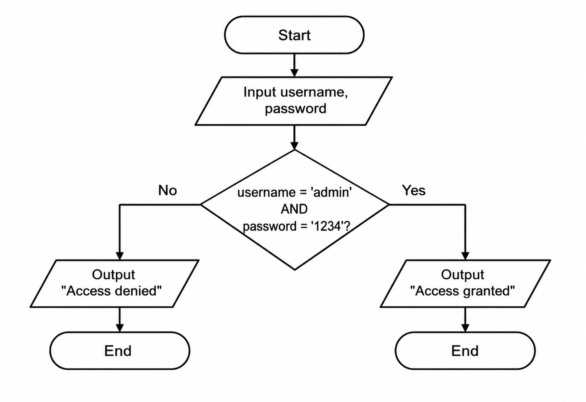
Figure 5: Flowchart for checking a username and password
Mark scheme
1 mark for each correct point:
The decision uses AND in the condition.
AND means both parts of the condition must be true.
Access is only granted when username = "admin" and password = "1234".
If either value is incorrect, the No branch outputs Access denied.
Accept any other valid point.
6) Figure 6 shows a counting loop. Explain how iteration is shown and state how many values are output. (4 marks)
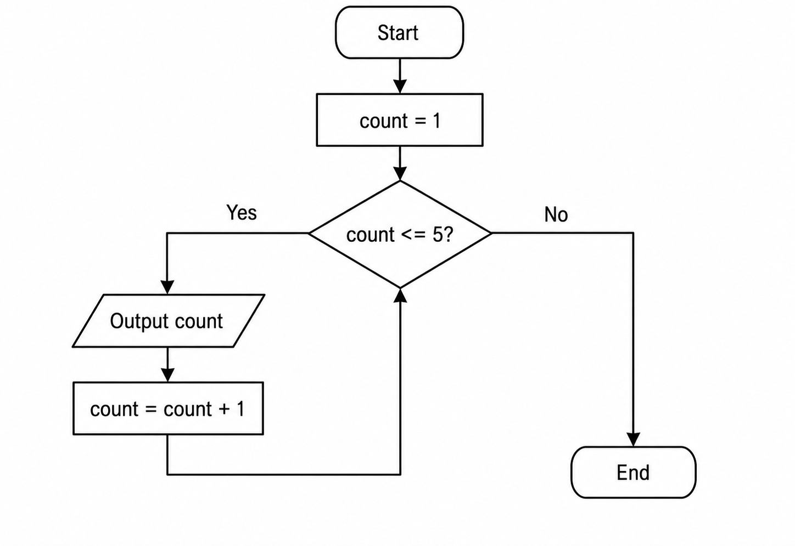
Figure 6: Flowchart for a counting loop
Mark scheme
Award up to 4 marks:
The decision checks whether count <= 5.
The Yes branch outputs count and then increases count by 1.
The arrow returns to the decision, showing iteration.
Five values are output: 1, 2, 3, 4 and 5.
7) Figure 7 calculates an average. Write OCR-style pseudocode for the flowchart. (5 marks)
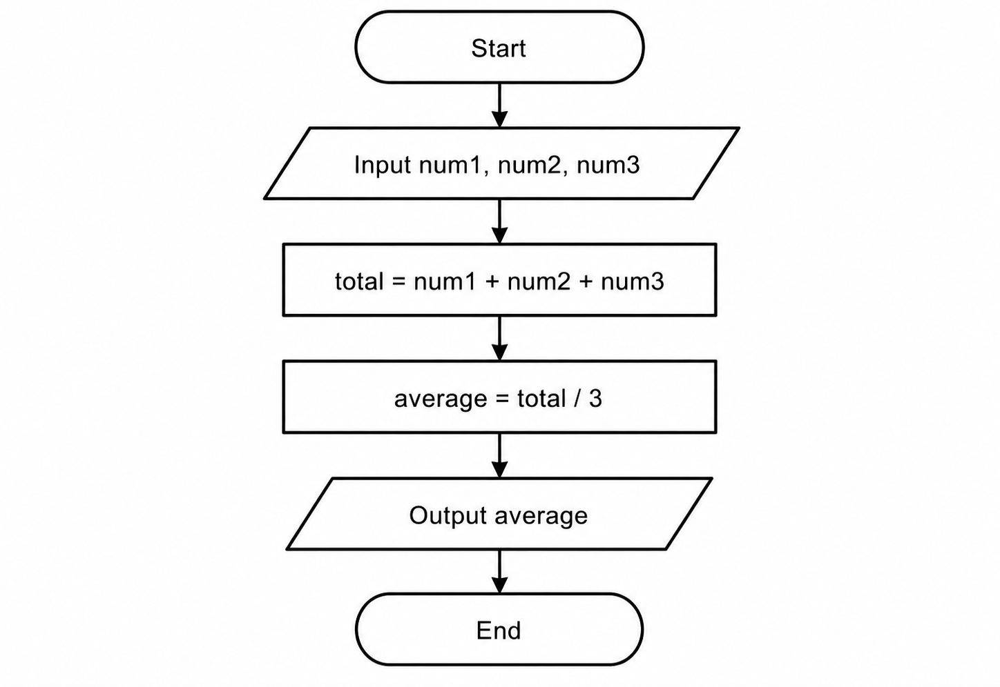
Figure 7: Flowchart for calculating an average
Mark scheme
Award up to 5 marks:
Inputs num1, num2 and num3.
Calculates total using all three values.
Calculates average by dividing total by 3.
Outputs average.
Uses clear OCR-style pseudocode with = for assignment.
Example answer:
num1 = INPUT
num2 = INPUT
num3 = INPUT
total = num1 + num2 + num3
average = total / 3
OUTPUT average
8) Figure 8 shows a password check flowchart. Identify the error and explain how to correct it. (3 marks)
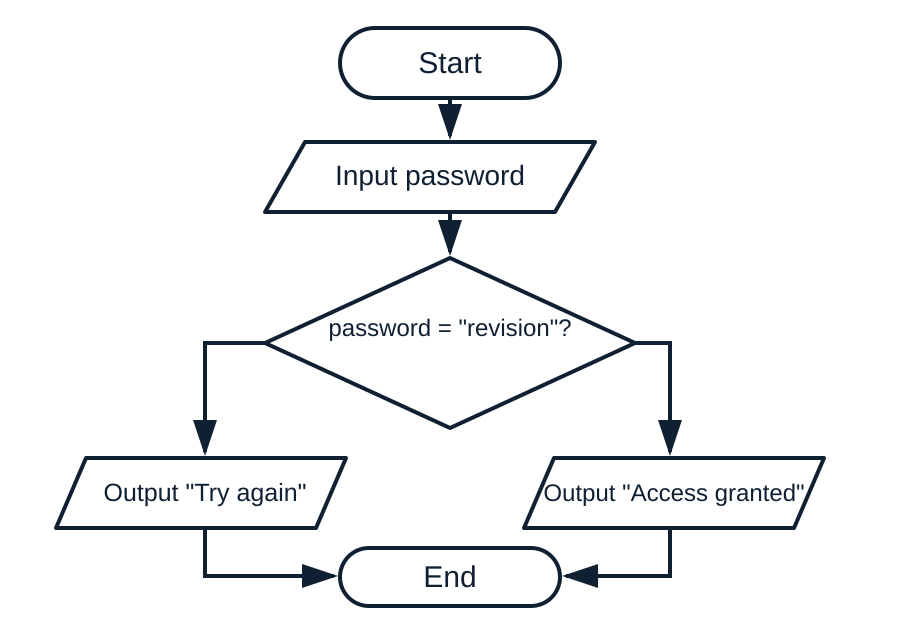
Figure 8: Password check flowchart with missing branch labels
Mark scheme
1 mark for each correct point:
The decision branches are not labelled.
This makes it unclear which path is followed when the condition is true or false.
Add Yes and No labels to the arrows leaving the decision diamond.
Accept any other valid point.
9) Draw the correct flowchart symbols around each labelled step in Figure 9. (6 marks)
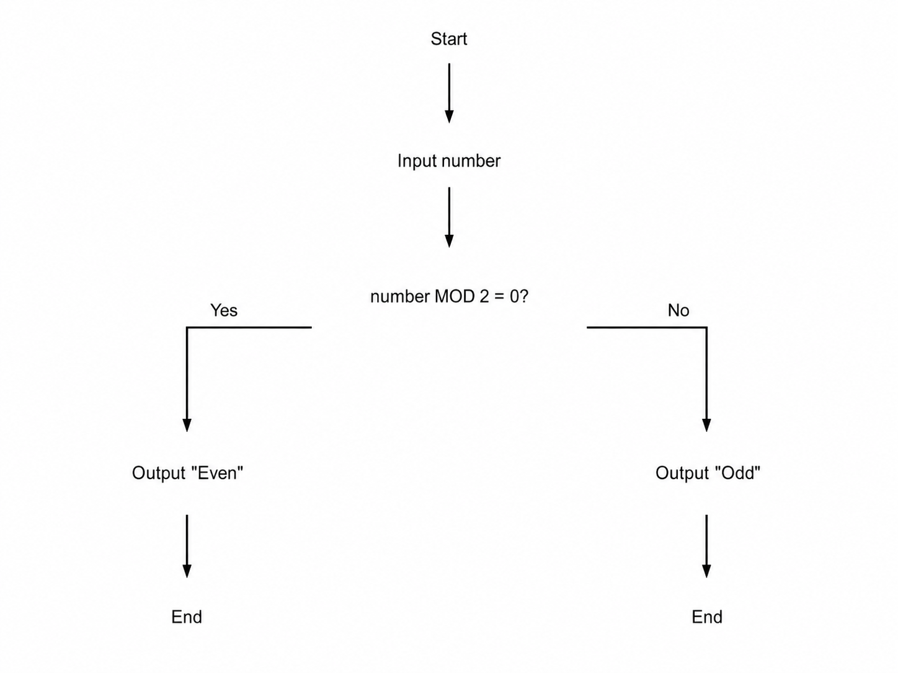
Figure 9: Flowchart with missing symbols
Mark scheme
Use the banded mark scheme first, then the indicative content below to decide the final mark.
Mark range
Quality of response
Expected content
5-6
Clear, accurate and well-developed response.
Applies the answer to the scenario or task and covers most of the relevant points from the indicative content.
3-4
Some accurate explanation with relevant points.
Covers several relevant points, but the response may lack detail, balance or clear application.
1-2
Limited response with basic understanding.
Includes one or two relevant points, but may be brief, generic or partly inaccurate.
0
No creditworthy response.
No relevant answer, or the response is too unclear to award marks.
Indicative content:
Draws a terminator symbol or rounded rectangle around Start.
Draws an input/output parallelogram around Input number.
Draws a decision diamond around number MOD 2 = 0?
Draws input/output parallelograms around Output "Even" and Output "Odd".
Draws terminator symbols or rounded rectangles around End.
Keeps the symbols clear, correctly positioned and connected to the flow of the arrows.
Accept any other valid equivalent layout.
Correct symbol types:
Start and End = terminator or rounded rectangle.
Input number = input/output parallelogram.
number MOD 2 = 0? = decision diamond.
Output "Even" and Output "Odd" = input/output parallelograms.
Completed flowchart with correct symbols
10) Draw the correct flowchart symbols around each labelled step in Figure 10. (7 marks)
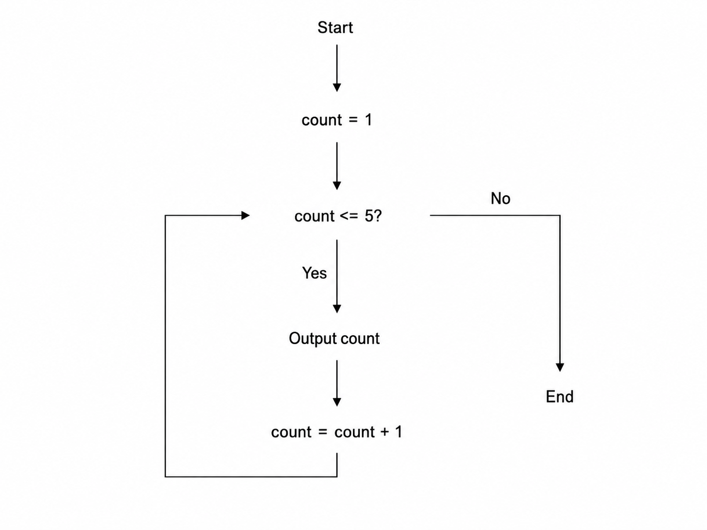
Figure 10: Flowchart loop with missing symbols
Mark scheme
Use the banded mark scheme first, then the indicative content below to decide the final mark.
Mark range
Quality of response
Expected content
6-7
Clear, accurate and well-developed response.
Applies the answer to the scenario or task and covers most of the relevant points from the indicative content.
3-5
Some accurate explanation with relevant points.
Covers several relevant points, but the response may lack detail, balance or clear application.
1-2
Limited response with basic understanding.
Includes one or two relevant points, but may be brief, generic or partly inaccurate.
0
No creditworthy response.
No relevant answer, or the response is too unclear to award marks.
Indicative content:
Draws a terminator symbol or rounded rectangle around Start.
Draws a process rectangle around count = 1.
Draws a decision diamond around count <= 5?
Draws an input/output parallelogram around Output count.
Draws a process rectangle around count = count + 1.
Draws a terminator symbol or rounded rectangle around End.
Keeps the loop structure clear, with the flow returning to the decision after count is increased.
Accept any other valid equivalent layout.
Correct symbol types:
Start and End = terminator or rounded rectangle.
count = 1 = process rectangle.
count <= 5? = decision diamond.
Output count = input/output parallelogram.
count = count + 1 = process rectangle.
Completed flowchart with correct symbols
11) A program inputs a score. If the score is 10 or more it outputs Winner, otherwise it outputs Try again. Draw a flowchart for this algorithm. (6 marks)
Mark scheme
Use the banded mark scheme first, then the indicative content below to decide the final mark.
Mark range
Quality of response
Expected content
5-6
Clear, accurate and well-developed response.
Applies the answer to the scenario or task and covers most of the relevant points from the indicative content.
3-4
Some accurate explanation with relevant points.
Covers several relevant points, but the response may lack detail, balance or clear application.
1-2
Limited response with basic understanding.
Includes one or two relevant points, but may be brief, generic or partly inaccurate.
0
No creditworthy response.
No relevant answer, or the response is too unclear to award marks.
Indicative content:
Uses rounded rectangles for Start and End.
Uses a parallelogram to input score.
Uses a diamond decision for score >= 10?
Labels the decision branches Yes and No.
Uses parallelograms to output Winner and Try again.
Uses arrows in the correct order from Start to End.
Accept any other valid flowchart with the same logic.
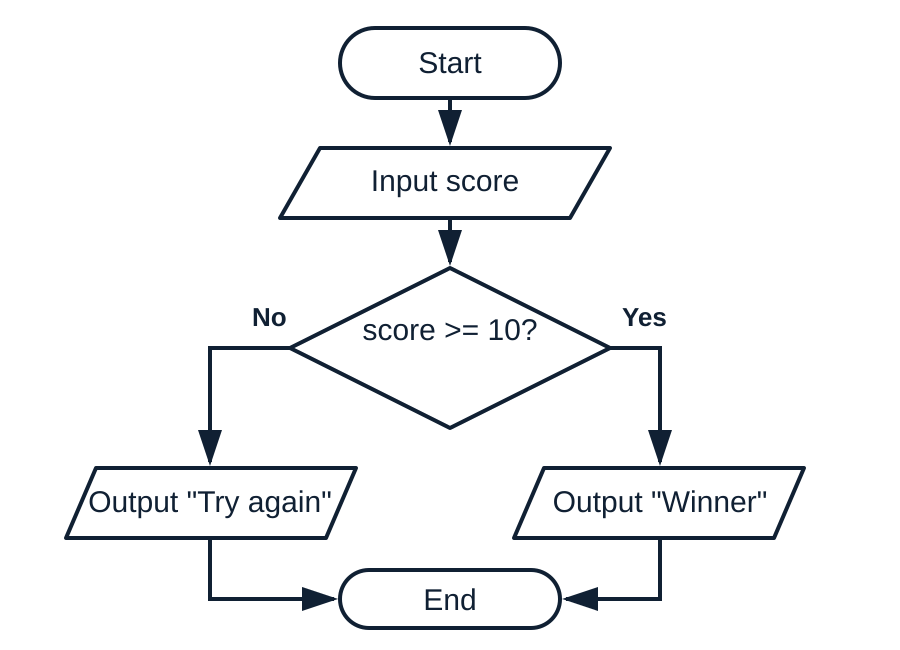
Completed flowchart for the score decision
12) An algorithm should output the numbers 1 to 3. It starts by setting count = 1, then repeats while count <= 3. Draw a flowchart for this algorithm. (7 marks)
Mark scheme
Use the banded mark scheme first, then the indicative content below to decide the final mark.
Mark range
Quality of response
Expected content
6-7
Clear, accurate and well-developed response.
Applies the answer to the scenario or task and covers most of the relevant points from the indicative content.
3-5
Some accurate explanation with relevant points.
Covers several relevant points, but the response may lack detail, balance or clear application.
1-2
Limited response with basic understanding.
Includes one or two relevant points, but may be brief, generic or partly inaccurate.
0
No creditworthy response.
No relevant answer, or the response is too unclear to award marks.
Indicative content:
Uses rounded rectangles for Start and End.
Uses a process rectangle for count = 1.
Uses a decision diamond for count <= 3?
Labels the Yes and No branches correctly.
Uses an output parallelogram for output count on the Yes branch.
Uses a process rectangle for count = count + 1.
Shows a loop-back arrow returning to the decision and a No branch leading to End.
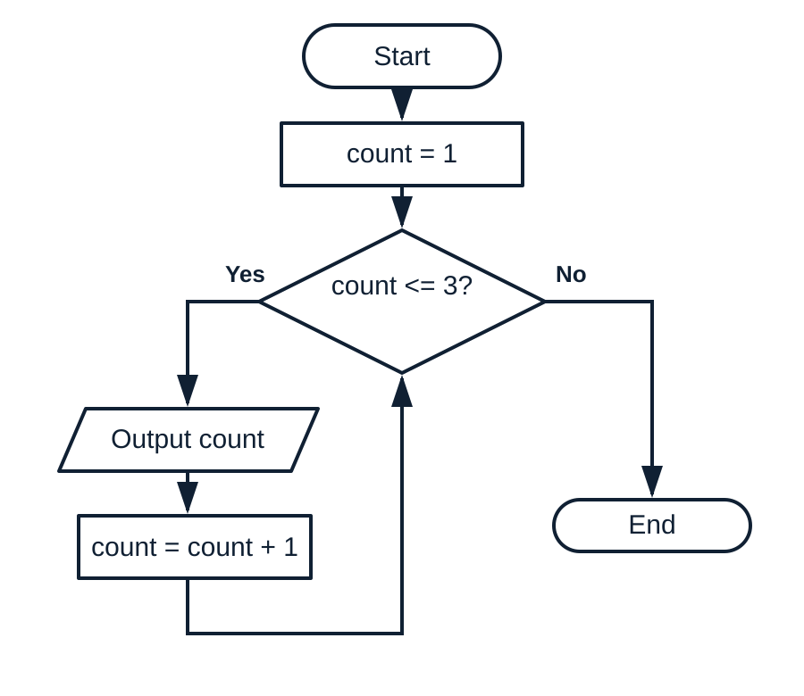
Completed flowchart for outputting 1 to 3
13) Identify the correct flowchart symbol for each purpose: Start or End, Input or Output, Process, Decision. (4 marks)